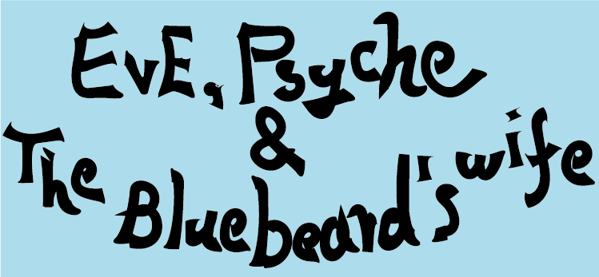

K-popランキング
1位 The Planet/BTS

韓国アニメ『BASTIONS（守護者）』の主題歌を務める新曲
大人気アイドルグループであるBTSが作詞作曲
2位 Take Two/BTS

「BTS」またしてもランキング入り!
BTSのデビュー10周年記念でリリースされた
3位 Eve, Psyche & The Bluebeard's wife/LE SSERAFIM
ジャージークラブスタイルの楽曲
歌詞からはK-popアイドルに求められる理想の姿ではなく、「私は私」という強いメッセージが感じられる